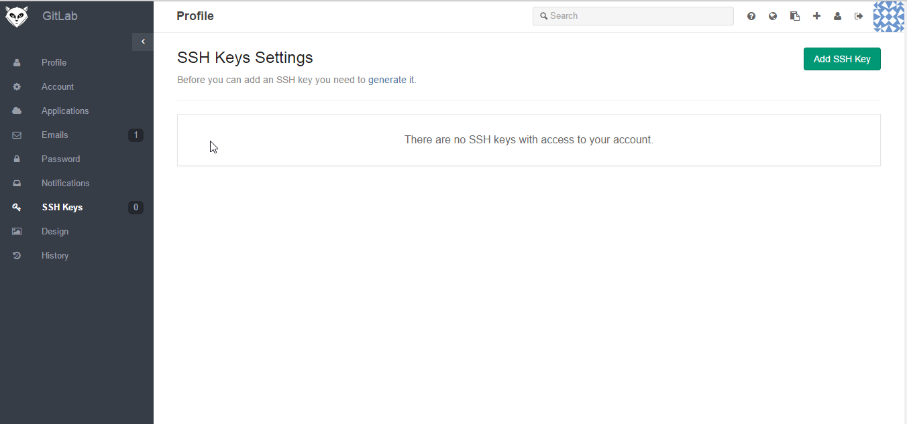

One time configuration
login to http://172.20.150.136/
using your configured username and passwordAdd an ssh key to your account
Go to your profile ...SSH Keys 
Click generate it and follow the instruction
Go back to Profile ...SSH keys ...Add SSH key
Put any title you want and the Paste the generated SSH key in previous step